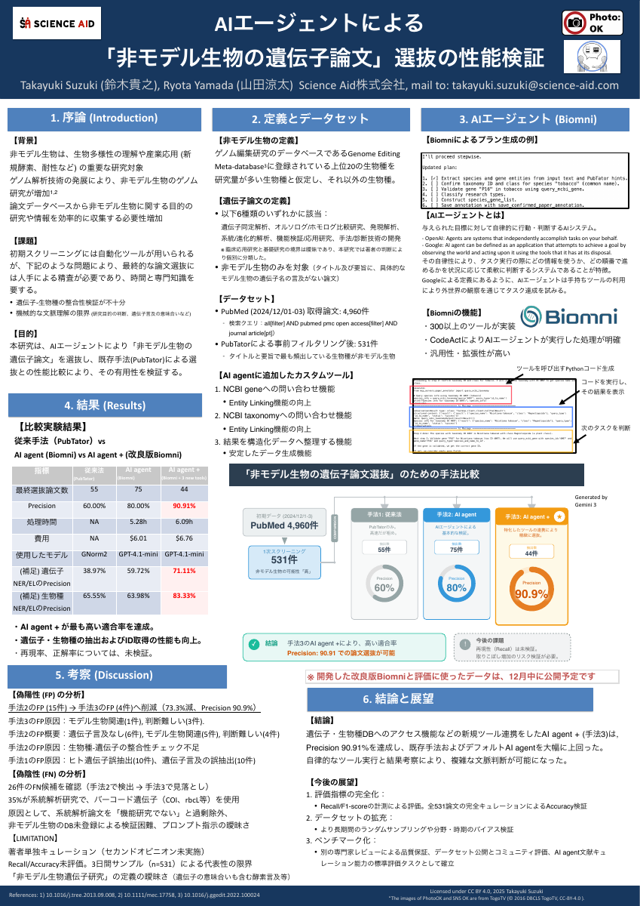

Agent-based Literature Curation
What is this?
Validation of AI Agent-Based Curation for Low-Noise Literature Set Construction
This repository provides complete research materials for validating AI agent-based literature curation methods, including:
- Comprehensive research documentation and findings
- Full analysis scripts and implementation code
- Experimental datasets and evaluation results
- Docker environment for reproducibility
Built with Biomni: This research is built upon Biomni, an open-source AI agent framework developed at Stanford University for biological and biomedical research.
Huang, K., Zhang, S., Wang, H., et al. (2025). Biomni: A General-Purpose Biomedical AI Agent. bioRxiv. https://doi.org/10.1101/2025.05.30.656746
Methodology
We tested three different approaches for literature curation and validated their performance by comparing Precision scores:
- Default Biomni: A Biomni AI agent with default configuration
- Custom Biomni: A Biomni AI agent with custom enhancements
- PubTator: NCBI's annotation system
Performance Metrics
Currently validated using Precision only. Other metrics such as Accuracy and F1-score are not yet evaluated.
For detailed research documentation, please refer to:
- BACKGROUND - Research context and motivation
- METHODS - Detailed methodology and operational definitions
- RESULTS - Performance comparison and metrics
- DISCUSSION - Analysis of false positives/negatives
- LIMITATIONS - Study constraints and future work
Conference Presentation
Presented at: The 48th Annual Meeting of the Molecular Biology Society of Japan
Date: December 3, 2025
Presention Material

Reproducibility
All data and scripts needed to reproduce this research are available in this GitHub repository.
Repository: github.com/science-aid/agent-based-literature-curation
Feel free to reference and use these materials for your own research.
Contact
Takayuki Suzuki 📧 takayuki.suzuki@science-aid.com 𝕏 @sci_aid_tszk